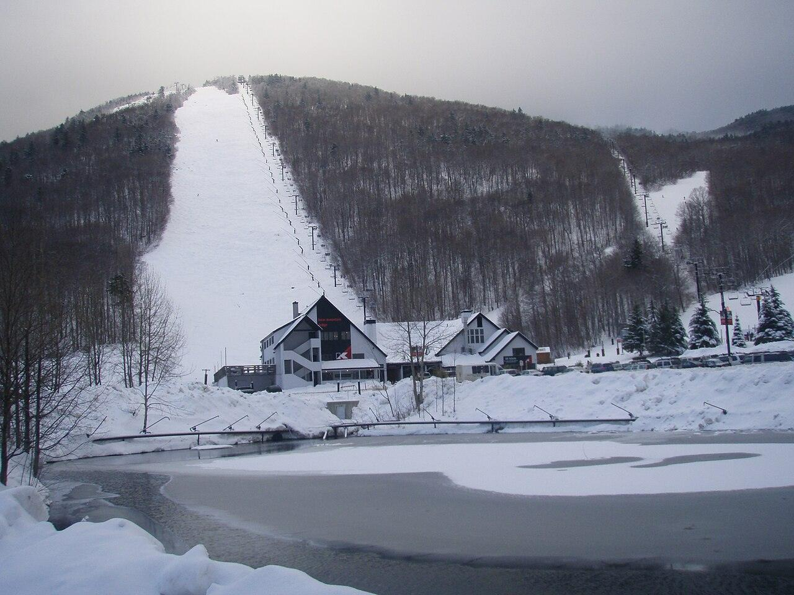

Last 7 days and the next 16, mid-mountain. Bars are this model; the grey tick is Open-Meteo's own snowfall number for comparison.
Snowy days grouped into storms. The range reflects how far past storm forecasts landed from what was measured.
October through May.
Scored on seasons the model never saw, at the stations it learned from.
Every day the site saves its forecast, then checks it against measured snow at nearby stations once reports come in. Forecasts are nudged by how far off they've been lately.
The model takes Open-Meteo's daily weather (temperature, precipitation, wind, humidity, pressure) and learns how much snow actually piles up, using NOAA's measured daily snowfall at Mt Mansfield and Chittenden, Vermont, and the SNOTEL snow-depth sensors at Taos Powderhorn and Red River Pass, New Mexico.
SNOTEL depth gains miss snow that settles within the day, so New Mexico numbers lean low. Treat Taos totals as a floor.